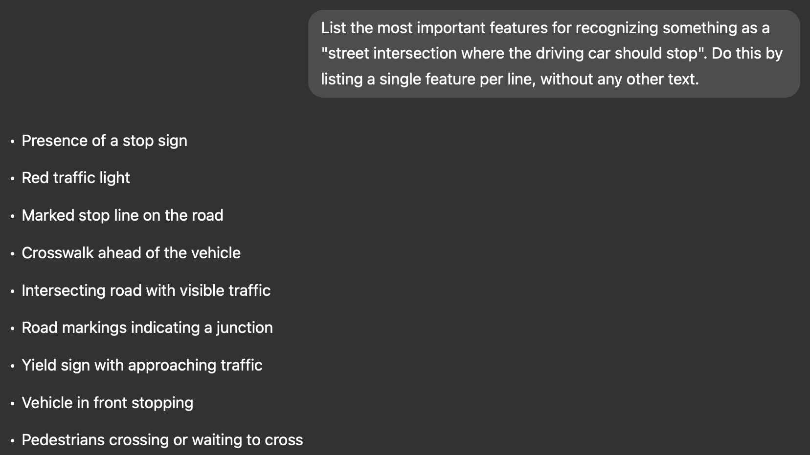

4. Label-free Concept Bottleneck Models#
{kind=link}
4.1. The Burden of Concept Annotations#
When describing Concept Bottleneck Models (CBMs) [KNT+20], we argued that by aligning every neuron in a “bottleneck” layer to some known ground truth concept, CBMs provide a useful framework for constructing interpretable neural models. However, it is only fair to admit that we might’ve grossly overlooked a key requirement: to properly train a CBM, one requires a large training set \(\mathcal{D} = \{(\mathbf{x}^{(i)}, \mathbf{c}^{(i)}, y^{(i)})\}_{i = 1}^N\) such that every training sample \(\mathbf{x}^{(i)}\) is not just annotated with a downstream label \(y^{(i)}\) but it also has a set of \(k\) binary concept annotations \(\mathbf{c}^{(i)} \subseteq \{0, 1\}^k\).
Anyone reading the previous statement would be more than forgiven to question its implications and, more importantly, its practical validity. As you can imagine, obtaining \(k\) binary concept annotations for each task relies, at the very least, on the following key assumptions:
\(\textcolor{blue}{\textbf{Assumption #1 (Oracle-like Awareness)}}\): during data collection/curation, data collectors must know all relevant concepts for a downstream task \(y\) of interest. For example, if I am learning to predict whether a car should stop at an intersection, then I should know the concepts of “light color”, “ambulance coming”, and “car in intersection” are sufficient to fully describe this task. In other words, we have oracle-like knowledge of all relevant high-level units of information required for a specific downstream task.
\(\textcolor{blue}{\textbf{Assumption #2 (Tractable Data Collection)}}\): we have the ability (e.g., time, money, and reach) to efficiently collect concept labels for all samples in the training set. We should be able to achieve this even if the set of concept labels is large (e.g., in the order of thousands of concepts).
\(\textcolor{blue}{\textbf{Assumption #3 (Storage/Collection Freedom)}}\): there are no conditions (e.g., legal, privacy, sensitivity, etc. constraints) that would limit our ability to store and collect all concept labels for all samples. This should hold even if some of the concept labels may contain sensitive or identifiable information in them about a specific sample (e.g., medical or demographic records).
Seriously considering these assumptions, quickly leads one to the realization that CBMs are highly constrained to be used in scenarios where (#1) we precisely know what concepts define our task of interest (e.g., this is mostly true for human-generated/synthetic task labels such as medical score systems), (#2) we have the ability to collect all of the concept labels (i.e., meaning \(k\) should be small and concepts should not be too expensive to collect), and (#3) we should only use these models in tasks where concept labels do not directly or indirectly contain identifiable/private/sensitive information we may not want to store in the first place (e.g., demographic variables or proxies).
All of these impose severe barriers to the applicability and usefulness of CBMs in real-world tasks. With this in mind, in this chapter we will introduce a set of techniques that can enable one to train a CBM even when we have no access to ground truth concept annotations. For this, we will leverage the vast wealth of knowledge and data that has been distilled into today’s so-called Foundation Models [BHA+21].
4.2. A Blueprint for Label-free CBMs#
In this Chapter, we will explore how to construct CBMs that are “label-free”1, avoiding the need for us to determine and collect all relevant concept labels for a downstream task of interest. Specifically, we will explore the underlying ideas behind two very popular concept-based models that do not require concept labels at training-time (so-called label-free approaches): Label-Free Concept Bottleneck Model [ODNW23] and Language in a Bottle [YPZ+23]. Both of these works capitalize on the power and availability of Foundation Models, and exploit these models to simulate human concept annotators. The crux for achieving this is to split the training process of a CBM into three stages where each stage tackles a different question:
Concept Refinement: given a label-annotated training set \(\mathcal{D} = \{(\mathbf{x}^{(i)}, y^{(i)})\}_{i = 1}^N\) (as in the standard supervised learning setup), how can we discover the identity (or semantics) of all concepts relevant to predict \(y\) given \(\mathbf{x}\)?
Automatic Concept Annotation: once we know the semantics of all the concepts of interest for the downstream task, how can we generate concept labels for all samples in our training set?
Concept Alignment: once we have concept annotations, how can we fine-tune or train a model that uses the refined concept set to explain its downstream task prediction?

Fig. 4.1 TODO: Abstract visualization of a blueprint for constructing label-free CBMs.#
Below, we elaborate on how each of these stages can be implemented in practice. As we do this, we will make use of our PyC library as we describe how we can construct a label-free CBM in PyTorch. If you are not familiar with this library yet, please take a look at our CBM chapter before jumping into this chapter.
4.3. Using Foundation Models as Knowledge Sources (Stage 1)#
⚠️ Warning: This section and the following ones assume that you have successfully installed and worked with our PyC library. For a tutorial on how to use this, please refer to our CBM post or to the library’s official documentation.
The first stage of any label-free pipeline is called Concept Refinement. Here, we aim to identify the semantics of a handful of high-level concepts that are useful for predicting a downstream task of interest. The key idea behind label-free approaches, as is the case nowadays whenever someone is in doubt, is to delegate this process to a Foundation Model.
Foundation models like GPT-4 [AAA+23] are trained on vast amounts of unstructured text, audio, and images. This enables them to learn rich semantic relationships between visual features and textual descriptions. As a result, they can function as approximate human evaluators, providing concept labels for new input requiring manual annotation. This idea can be applied to any input data, as far as there is one foundation model that can reason about instances in the domain of interest.
Therefore, approaches like Label-free CBMs avoid the need for specifying concepts in advance and collecting labeled datasets, by querying a foundation model to obtain text descriptions of potential concepts that are important for a downstream task. For example, you can obtain textual descriptions of concepts that are relevant for the task “stop at an intersection” by asking an LLM to “List the most important features for recognizing something as a {class}:”. In our driving intersection example, this may look as follows:
{kind=link}

Fig. 4.2 Example of identifying useful concepts to determine whether one should stop at a car intersection using GPT-4o as our source of knowledge.#
In practice, Oikarinen et al. and Yang et al. apply several filters to the output of the LLM to reduce the size, redundancy, and complexity of the output concepts set. Nevertheless, after running this process for all the output classes in our downstream task \(y\), we obtain a set \(\hat{\mathcal{C}}\) of textual descriptions of high-level concepts! Then, all we need to do is understand how to leverage these textual descriptions to obtain concept labels we can use to train a CBM. That will be done in our second stage of the label-free blueprint described above.
4.3.1. [Hands-on] Identifying Meaningful Concepts Using LLMs#
TODO: Need to decide the following:
1. Which dataset should we use for this chapter? My suggestion would be a smaller subset of
AwA2, maybe choosing only two animal species to discriminate.
2. How can we generate this without requiring an API key for the LLM? Should
we run these separately and report the results here? Or should we do it
programatically within the notebook?
3. How to incorporate the concept refinement stage of Label-free methods into PyC?
My preference would be to keep the label/data side of things outside of the library,
although we can show it as an example.
Cell In[1], line 1
TODO: Need to decide the following:
^
SyntaxError: invalid syntax
4.4. Simulating Human Annotators Via Multimodal Models (Stage 2)#
TODO: This section needs completing and a lot of massaging too.
Once we have a set of textual concept descriptions \(\hat{\mathcal{C}}\), we use them to annotate a training set with concept labels. We will do this by exploiting Multimodal Models (e.g., models trained with more than one modality, or datatype). For example, if our input samples \(\mathbf{x}^{(i)}\) are natural images, then we can use something like CLIP (Contrastive Language-Image Pretraining), a vision-language model trained to associate images with textual descriptions through contrastive learning, to generate scalar scores corresponding to each \((\mathbf{x}^{(i)}, C), where \)c \in \(\hat{\mathcal{C}}\)$ is any of the concepts descriptions we extracted in Stage 1 of our blueprint.
To have a nice intro to what CLIP is and how you can use it, you can visit this tutorial.
TODO: Describe how to construct a similarity matrix, as this is useful for part 3.
4.4.1. [Hands-on] Constructing Scalar Labels for Discovered Concepts#
TODO:
1. Use CLIP to generate scores for each concept for each sample.
2. Show that these scores could be left as unbounded scalars as well as they
could be binarized using a zero-shot classifier.
3. Make it clear that in order to follow the original label-free paper, here we
will focus on the unbounded scalar scores form.
4.5. Concept Alignment (Stage 3)#
TODO: discuss how to use the concept similarity matrix to construct a CBM. Here we should probably introduce the label-free CBM “cos cubed” loss as well as the use of sparse label predictors to construct interpretable models.
4.5.1. [Hands-on] Building a Label-free CBM#
TODO:
1. Decide how to construct the API for the label-free CBM model. I would suggest
adding a LabelFreeConceptBottleneckLayer as a new layer as well as the
label-free loss as a new loss function/class in PyC.
2. Add a sparse layer class too for the label predictor, something that will
be useful not just for this chapter but also for others (e.g., post-hoc CBM).
3. Use the labels constructed above to train a label-free CBM.
4. Visualize some of the explanations it generates for some for some examples
5. Do some flow diagrams as in the paper to visualize the label predictor's
weights for different classes.
4.6. Coda: Limitations of Existing Label-free Approaches#
[TODO: complete/clean-up this section]
While using CLIP or other foundation models for concept extraction offers numerous advantages, it also comes with several limitations:
Domain-Specificity: These models are trained on diverse datasets but may struggle with domain-specific concepts that are underrepresented in their training data. This could be aided by exploiting domain-specific foundation models (e.g., MedCLIP [WWAS22] for diagnosis/prognosis tasks).
Performance Dependence: The quality of concept extraction is inherently tied to the performance of the foundation models. If these models have limitations or biases, the extracted concepts will reflect them.
Lack of Guarantees Outputs: Unlike human annotators who follow specific guidelines, foundation models generate concept scores based on broad statistical associations, which may lack consistency or reliability in specific applications. This could lead to significantly noisy concept labels.
5. Take Home Messages#
[TODO: complete/clean-up this section]
Automatically extracting concepts using foundation models offers a powerful alternative to manually annotated datasets for concept-based deep learning. By leveraging the vast knowledge embedded in these models, we can obtain high-level, human-interpretable concepts with minimal effort. However, challenges remain, particularly regarding domain adaptation, reliance on potentially sub-optimal models, and the interpretability of extracted concepts.
While foundation models can serve as effective proxies for human experts, their outputs should be used cautiously. These models should not be treated as absolute sources of truth but rather as tools that aid in concept extraction, requiring human validation to ensure accuracy and robustness.
Bibliography
Oikarinen, Tuomas P., et al. “Label-free Concept Bottleneck Models.” ICLR. 2023.
Achiam, Josh, et al. “Gpt-4 technical report.” arXiv preprint arXiv:2303.08774 (2023)
Footnotes
1: Label-free here implies uniquely “free of concept labels.” Nevertheless, it is important to understand that we still have access to downstream labels \(y\).